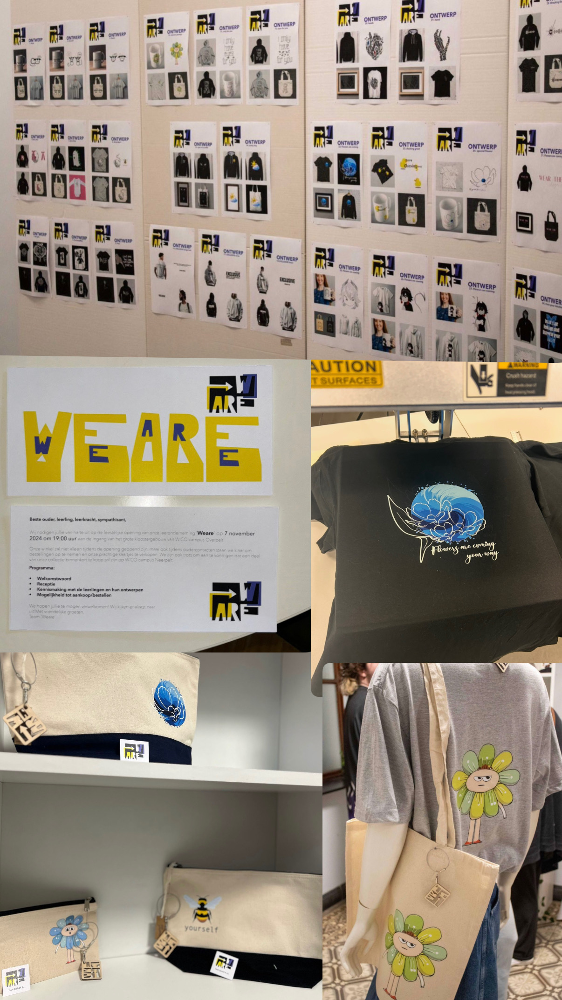

WeAre
We hebben met onze klas WeAre opgericht: een volledig zelfbedachte winkel waar we alles zelf hebben ontworpen, geprint, gedrukt en ingericht. Van het ontwerp van de kleding tot de inrichting van de winkel het hele project lag in onze handen. Uiteindelijk hebben we onze eigen kleding ook echt verkocht aan klanten, waardoor WeAre een volledig creatief en praktisch uitgewerkt schoolproject werd.